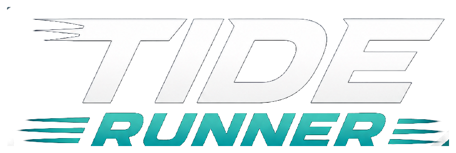

This game can send anonymous usage data (which courses and difficulties
get played) to help decide where to spend effort next. Nothing that
identifies you. Change your mind any time in Settings.
Privacy.

Race the fleet at a difficulty of your choosing — and watch out for
the sharks.
Course
Laps
Rivals
Courses
Boathouse
Kit out your boat, your name and your gear locker.
0 coins
Your name (optional)
Daily spin
Free, once a day
Your boat
Colours · Flags · Challenges
Gear
Buy with coins · used up in the race
One runs out and you buy another — not something you unlock once.
Everything you own comes with you into the race; racing without
any is free.